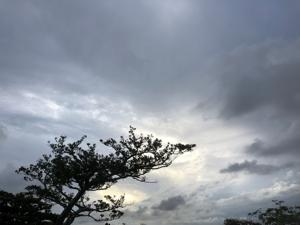
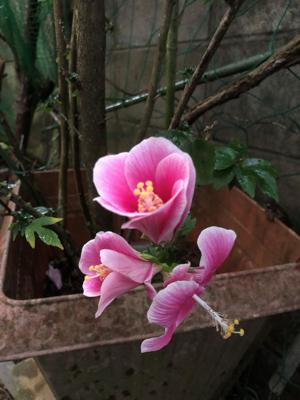

うるがいの話 ある日
最新: 県立図書館返却【うるがいの話 ある日】とは 一日だけのプログです
『うるがいの話』の最新一日だけのプログで、通信料が少なく経済的だ。カニの画像をクリックすると全ての日付が載る『うるがいの話』サイトを表示します
|
|
【うるがいの話】 うるがい(ｳﾙｶﾞｲ urugai)とは、『もずくがに』の名前でとても大きくなります。 |
|---|---|
|
|
【カミマヤーの話】 猫のことを方言でマヤーといいます。カミマヤー（kamimayaa）とは、神の猫のことです。 |
|
【たながぁの音楽】 たながぁ（ﾀﾅｶﾞｰ tanagaa）とは手長えびのことで、何種類かあり大きいのは車 エビぐらいになります。 |

|
【ぶながぁの話】 ぶながぁ(ﾌﾞﾅｶﾞｰ bunagaa)とは、赤い髪の毛、赤い身体、そして身長は１ｍ２０ｃｍ ぐらい、川の蟹を食べているの目撃された。場所は沖縄県国頭郡大宜味村のと ある村僕の隣近所に住んでいる爺さんから、聞いた話です。 |
|
|
【ギーマの話】 ギーマ(giima)とは、山原の里山に咲くスズランに似た、 花を付けます。実は食べられます、 気が付くと口の周りが紫になっています。 |
2022年12月06日 (火）県立図書館返却
15:01

日曜日返却の延長をネットで行おうとすると『Jonny Ball の数学の歴史物語
古代エジプトから現代まで』の予約があり、延長出来なかった。仕方なく、県
立図書館へ行く。さっさと１０冊を自動返却機に送り込み、新しい１０冊を棚
から適当に選び自動貸出手続きをパソコンから行おうとすると、最後の１冊に
アカマークが付き、窓口へ問い合わせくださいと警告された。窓口へ状況を話
すと、『一冊が返却されてません、この本です』、え！、先ほど返却しました
と職員は自動返却機のところへ行き、その本があることを確認しことなきを得
る。ふーん、読み取り装置の誤作動だ。１０冊でなく、９冊だったらどうなっ
たのだろう。もしかして、延滞扱いになったかも。延滞なると、予約出来なく
なるので困った状態になったかもと考える。サッカークロアチアと試合終了ま
で見る、朝３時前、興奮している。こんな時はと、新しく借りた『数学者の哲
学＋哲学者の数学歴史を通じ現代を生きる思索』を読む。難しくてイライラし
たが、やがて眠りに落ちる。しかし、誰がこんなの読むのだろうか・・・・・

１４時５４分 ビットコインの総資産 ￥６、７４１（↓１８）